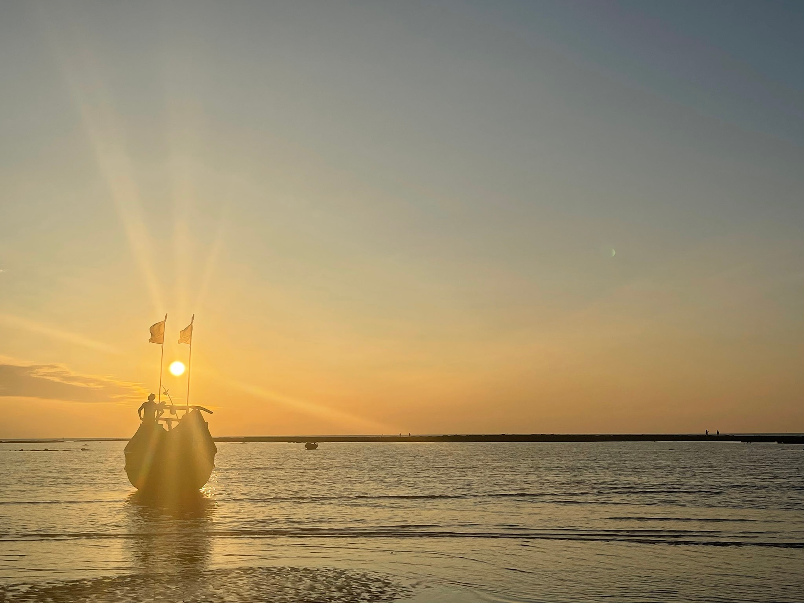

Places to visit in Bangladesh

Overview
This web site uses data from iNaturalist, one of the world's best nature apps for connecting scientists, naturalists, and anyone with an interest in how the natural world works. People use iNaturalist to record and identify observations. The result is a free database of wildlife sightings around the world.
We are using this data to create a virtual nature walk, highlighting plants, animals, insects, and more near Seneca Newnham Campus .